神劍與屠刀
NT$ 220
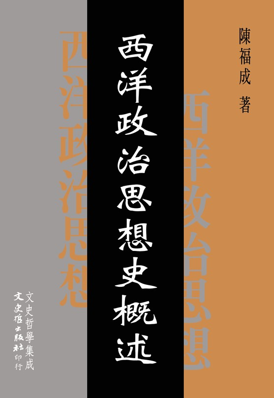
西洋政治思想史概述
NT$ 400
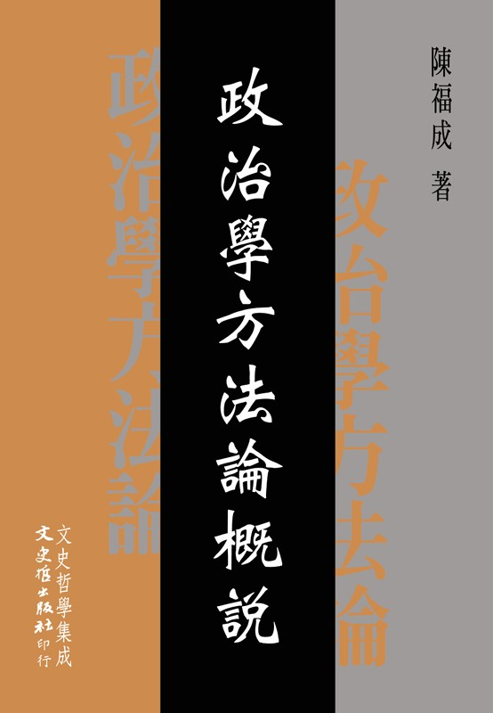
政治學方法論概說
NT$ 350
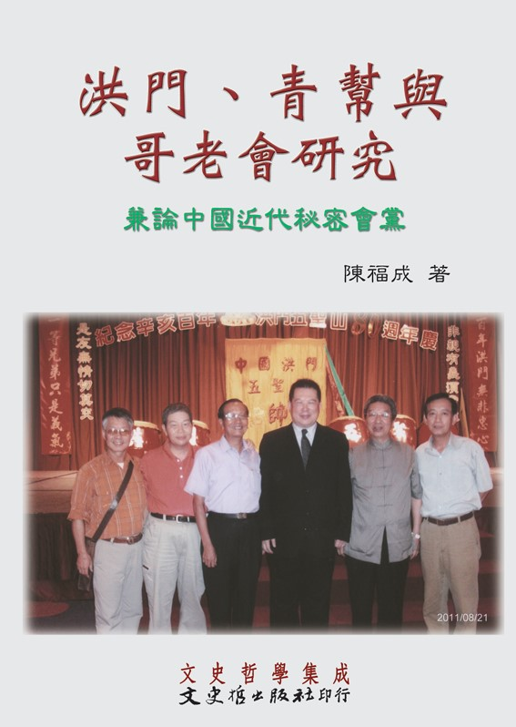
洪門青幫與哥老會研究：兼論中國近代秘密會黨
NT$ 500
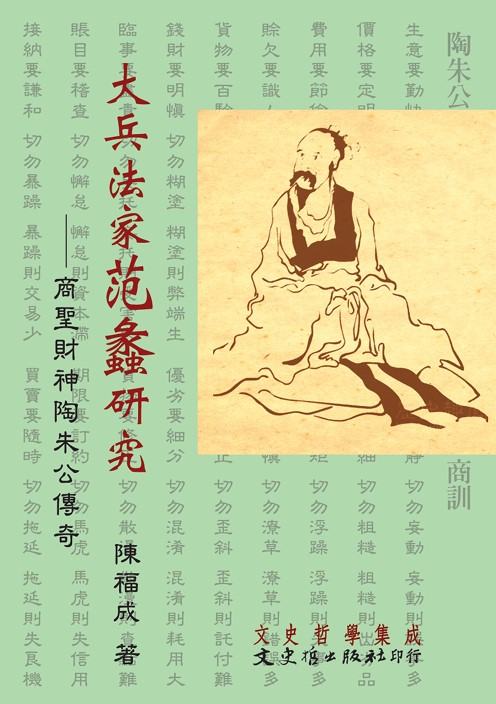
大兵法家范蠡研究：商聖財神陶朱公傳奇
NT$ 280
范蠡致富研究與學習: 商聖財神之實務與操作
NT$ 280
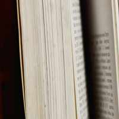
范蠡完勝三十六計: 智謀之理論與全方位實務操作
NT$ 880
<<華夏春秋>>雜誌合訂本: 1-6期
NT$ 800

公主與王子的夢幻
NT$ 300
春秋正義
NT$ 300
頓悟學習
NT$ 260
一個軍校生的台大閒情
NT$ 280

愛倫坡恐怖推理小說經典新選
NT$ 280

洄游的鮭魚（BOD）
NT$ 300

山西芮城劉焦智《鳳梅人》報研究
NT$ 340

古道．秋風．瘦筆（BOD）
NT$ 280
三月詩會研究：春秋大業十八年（BOD）
NT$ 560
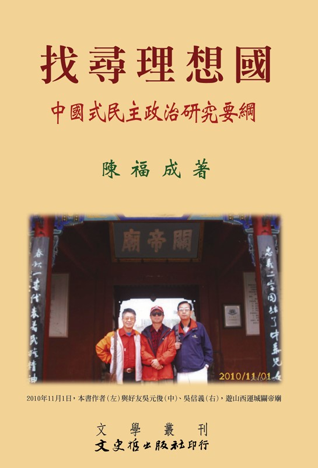
找尋理想國－中國式民主政治研究要綱（BOD）
NT$ 160

我所知道的孫大公－黃埔28期孫大公研究
NT$ 320

在「鳳梅人」小橋上－中國山西芮城三人行
NT$ 480

大浩劫後（BOD）
NT$ 160
第四波戰爭開山鼻祖賓拉登：及戰爭之常變研究要綱（BOD）
NT$ 180
台大逸仙學會：兼論統派經營中國統一事業大戰略要領芻議（BOD）
NT$ 280
金秋六人行
NT$ 640
中國當代平民詩人王學忠詩歌?記
NT$ 380
我們的春秋大業：三月詩會二十年別集
NT$ 420
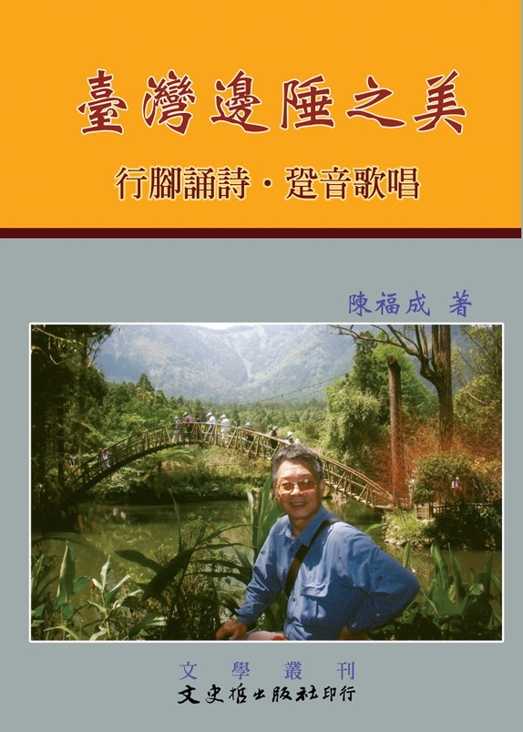
臺灣邊陲之美
NT$ 300
最自在的是彩霞：臺大退休人員聯誼會
NT$ 300
臺中開發史：兼台中龍井陳家移臺略考
NT$ 440
嚴謹與浪漫之間：范楊松的生涯轉折與文學風華
NT$ 540

讀詩稗記：蟾蜍山萬盛草齋文存
NT$ 450

古晟的誕生：陳福成六十回顧詩展
NT$ 440
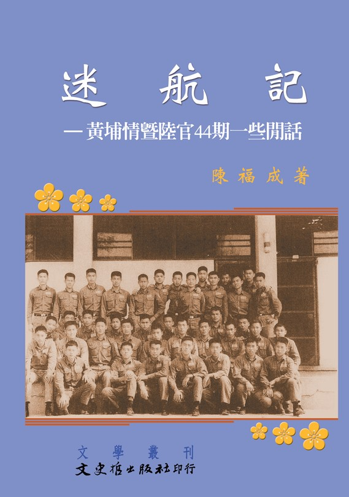
迷航記：黃埔情暨陸官44期一些閒話
NT$ 500
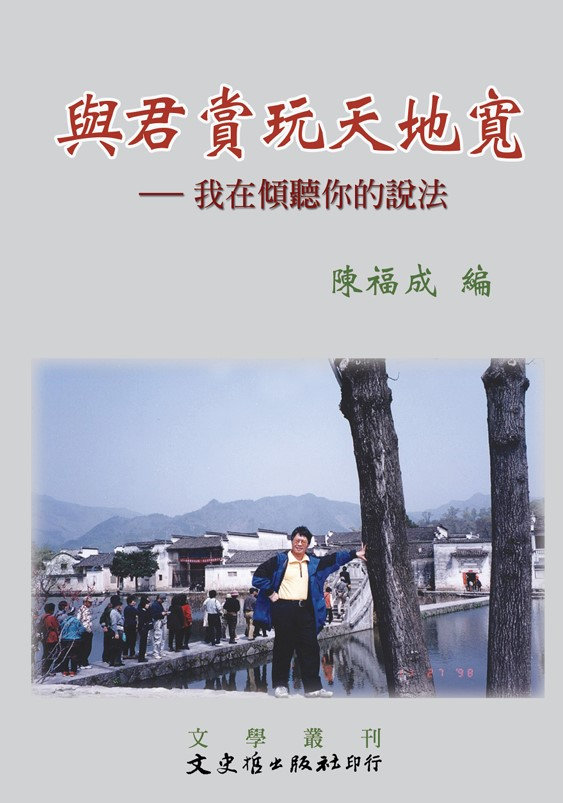
與君賞玩天地寬
NT$ 380
為中華民族的生存發展近百書疏--孫大公的思想主張書函手稿
NT$ 480
一信詩學研究：解剖一隻九頭詩鵠
NT$ 480
為播詩種與莊雲惠詩作初探：暨莊老師的詩種花園詩友會
NT$ 280
春秋詩選
NT$ 380
陳福成著作全編
NT$ 36800
囚徒：五千五百行長詩
NT$ 480
「日本問題」的終極處理：21世紀中國人的天命與扶桑省建設要鋼
NT$ 160
天帝教的中華文化意涵：掬一瓢《教訊》品天香
NT$ 420

臺大教官興衰錄
NT$ 360

台北的前世今生：圖文說台北開發的故事
NT$ 500
把腳印典藏在雲端：三月詩會詩人手搞詩
NT$ 540
奴婢妾匪到革命之路：復興廣播電台謝雪紅訪講錄
NT$ 700
我的革命檔案
NT$ 420
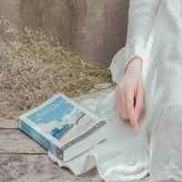
胡爾泰現代詩臆說：發現一個詩人的桃花源
NT$ 380
從魯迅文學醫人魂救國魂說起：兼論中國新詩的精神重建
NT$ 260
臺北公館臺大考古導覽：圖文說公館臺大的前世今生
NT$ 440
六十後詩雜記現代詩集
NT$ 340

臺灣大學退休人員聯誼會會物通訊
NT$ 1000
中國全民民主統一會北京、天津行：兼略述全統會過去現在及未來發展
NT$ 400
「外公」和「外婆」的詩：暨三月詩會外公 外婆詩
NT$ 360
留住末代書寫的身影：三月詩會詩人往來書簡存集
NT$ 600
我這輩子幹了什麼好事：我和兩岸大學圖書館的因緣
NT$ 500
梁又平事件後：佛法對治風暴的沉思與學習
NT$ 320
三世因緣書畫集：芳香幾世情
NT$ 360
臺灣大學退休人員聯誼會第九屆理事長實記(21013~2014)
NT$ 300

王學忠籲天詩錄：讀《我知道風兒朝哪個方向吹》的擴張思索
NT$ 420
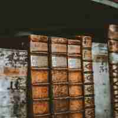
一隻菜鳥的學佛初認識：讀《星雲說偈》和《貧僧有話要說》心得報告
NT$ 460
海青青的天空：牡丹園詩花不謝
NT$ 250
世界洪門歷史文化協會論壇：澳門洪門2015記實
NT$ 280
緣來艱辛非尋常：賞讀范揚松仿古體詩稿
NT$ 280
典藏斷滅的文明 ：最後一代書寫身影的告別紀念
NT$ 450
葉莎現代詩研究賞析：解讀靈山一朵花的美感
NT$ 220
臺灣大學退休人員聯誼會第十屆理事長暨2015-2016重要事件簿
NT$ 400
我與當代中國大學圖書館的因緣
NT$ 300

廣西參訪遊記: 中國全民民主統一會廣西南寧崇左巴馬參訪旅遊
NT$ 300
中國鄉土詩人金土作品研究: 我與遼寧張云昕的<<華夏春秋>>因緣
NT$ 420
暇豫翻翻<<揚子江>>詩刊: 蟾蜍山麓讀詩瑣記
NT$ 320
我讀上海<<海上詩刊>>: 中國歷史園林豫園詩話瑣記
NT$ 320
光陰簡史: 我的影像回憶錄現代詩集
NT$ 360
光陰考古學: 失落圖像考古現代詩集
NT$ 460
我讀北京<<黃埔>>雜誌的筆記
NT$ 400
天帝教第二人間使命: 上帝加持中國統一之路
NT$ 460
觀自在綠蒂詩話: 無住生詩的孤寂漂泊詩
NT$ 580
中國詩歌墾拓者海青青: <<牡丹園>>和<<中原歌壇>>
NT$ 460
走過這一世的證據: 影像回顧現代詩集
NT$ 580
這一世我們同路的證據: 影像回顧現代詩題集
NT$ 540
感動世界: 感動三界故事詩集
NT$ 360
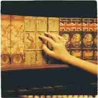
印加最後的獨白: 蟾蜍山萬盛草齋詩稿
NT$ 400
臺大遺境: 失落圖像現代詩題集
NT$ 580
中國鄉土詩人金土作品研究反響集
NT$ 320
夢幻泡影: 金剛人生現代詩經
NT$ 580
我與當代中國大學圖書館的因緣. 三
NT$ 580
這一世我們乘佛法行過神州大地: 生身中國人的難得與光榮史詩
NT$ 580
地瓜最後的獨白: 陳福成長詩集
NT$ 240
甘薯史記: 陳福成超時空傳奇長詩劇
NT$ 320
芋頭史記: 陳福成科幻歷史傳奇長詩劇
NT$ 350
這一世只做好一件事: 為中華民族留下一筆文化公共財
NT$ 380
龍族魂: 陳福成籲天錄詩集
NT$ 380

歷史與真相
NT$ 320
蔣毛最後的邂逅: 陳福成中方夜譚春秋
NT$ 300
大航海家鄭和: 人類史上最早的慈航圖證
NT$ 300
欣賞亞媺現代詩: 懷念丁潁中國心
NT$ 440
向明等八家詩讀後: 被<<食餘飲後集>>電到
NT$ 440
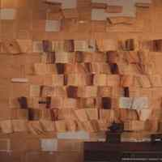
陳福成二０二一年短詩集: 躲進蓮藕孔洞內乘涼
NT$ 380
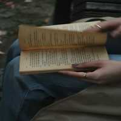
中國新詩百年名家作品欣賞
NT$ 460
流浪在神州邊陲的詩魂: 台灣新詩人詩刊詩社
NT$ 420
漂泊在神州邊陲的詩魂: 台灣新詩人詩刊詩社
NT$ 460
陸官44期福心會: 暨一些黃埔情緣記事
NT$ 320
我躲進蓮藕孔洞內乘涼: 2021~2022的心情詩集
NT$ 340
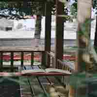
陳福成70自編年表: 所見所做所寫事件簿
NT$ 400
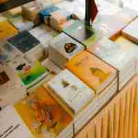
我的祖國行腳詩鈔: 陳福成70歲紀念詩集
NT$ 380
日本將不復存在：天譴一個民族
NT$ 240
一個中國平民詩人的 天命：王懷忠詩的社會關懷
NT$ 280
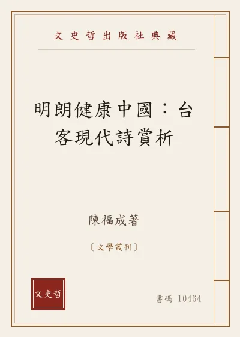
明朗健康中國：台客現代詩賞析
NT$ 440
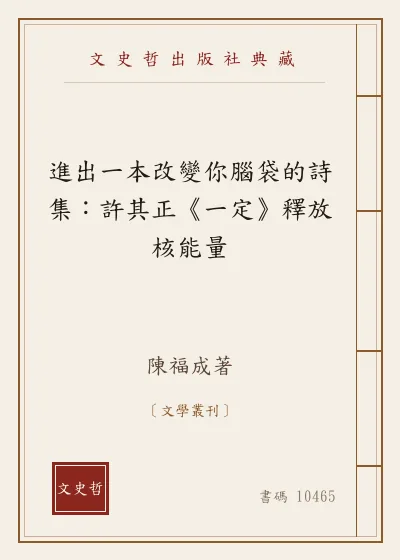
進出一本改變你腦袋的詩集：許其正《一定》釋放核能量
NT$ 300
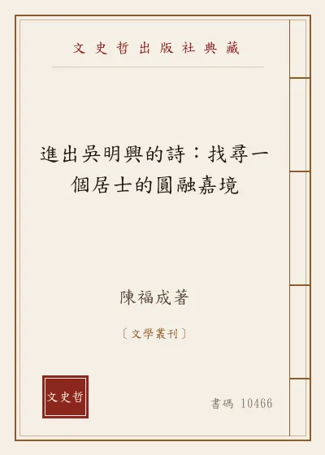
進出吳明興的詩：找尋一個居士的圓融嘉境
NT$ 340
進出方飛白的詩與畫：阿拉伯風韻與愛情
NT$ 440
中國藏頭詩：范楊松講學行旅詩欣賞(一)
NT$ 280
中國藏頭詩：范楊松春秋大義詩欣賞(二)
NT$ 280
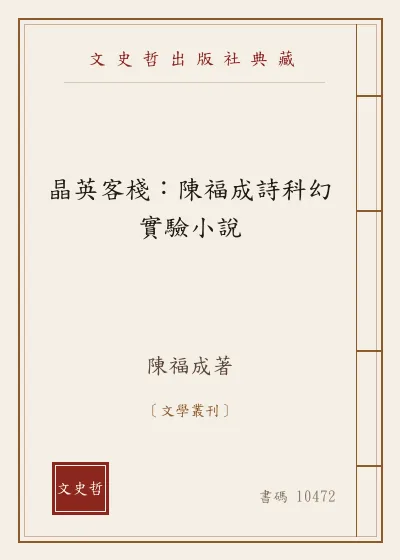
晶英客棧：陳福成詩科幻實驗小說
NT$ 240
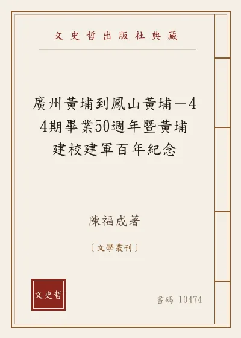
廣州黃埔到鳳山黃埔－44期畢業50週年暨黃埔建校建軍百年紀念
NT$ 340
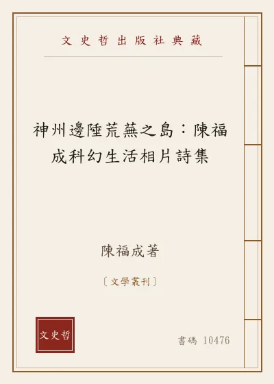
神州邊陲荒蕪之島：陳福成科幻生活相片詩集
NT$ 500
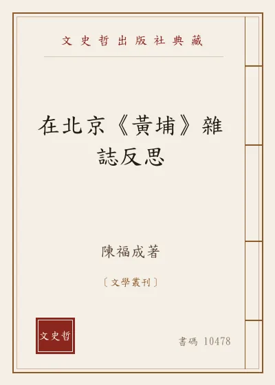
在北京《黃埔》雜誌反思
NT$ 320
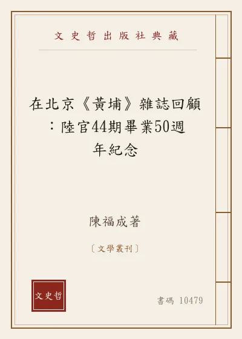
在北京《黃埔》雜誌回顧：陸官44期畢業50週年紀念
NT$ 320
黃埔人的春秋大業：北京《黃埔》雜誌展鴻圖
NT$ 320
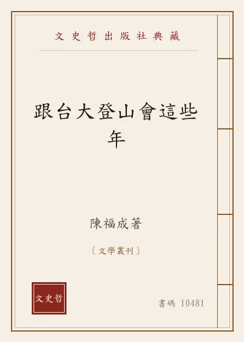
跟台大登山會這些年
NT$ 360
晶英客棧續集：陳福成詩科幻實驗小說
NT$ 360
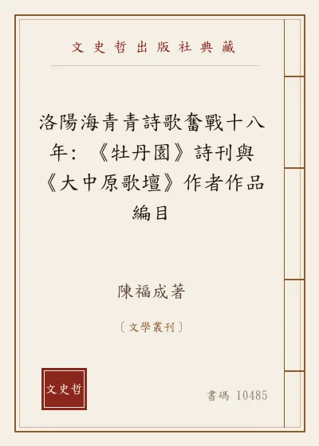
洛陽海青青詩歌奮戰十八年: 《牡丹園》詩刊與《大中原歌壇》作者作品編目
NT$ 420
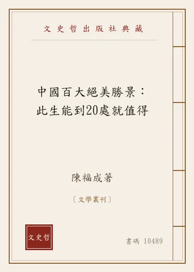
中國百大絕美勝景： 此生能到20處就值得
NT$ 400
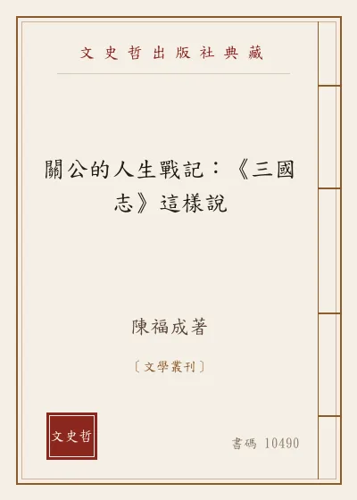
關公的人生戰記：《三國志》這樣說
NT$ 260
中國夢一帶一路瑣記： 星槎神州邊陲之紀行
NT$ 280
復興崗師友會暨水安隊志工聯誼會成立五週年專集
NT$ 380
我們一走過神州大地–六加四傳奇
NT$ 440
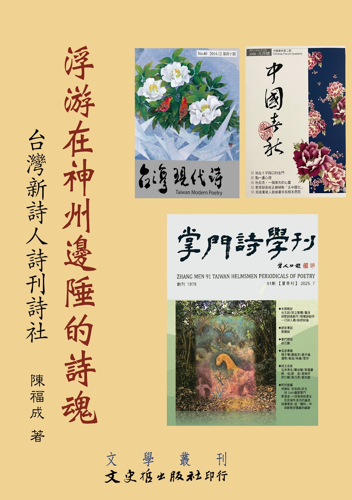
浮游在神州邊陲的詩魂：台灣新詩人詩刊與詩社
NT$ 380
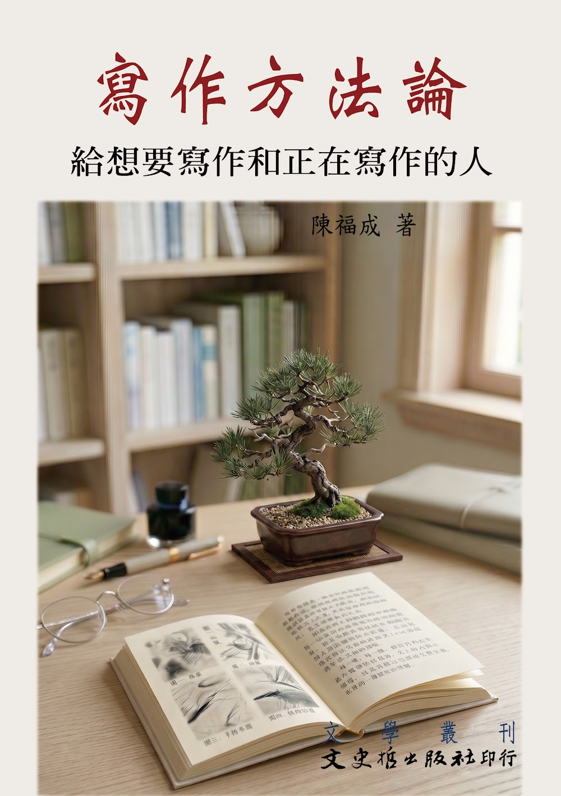
寫作方法論：給想要寫作和正在寫作的人
NT$ 260
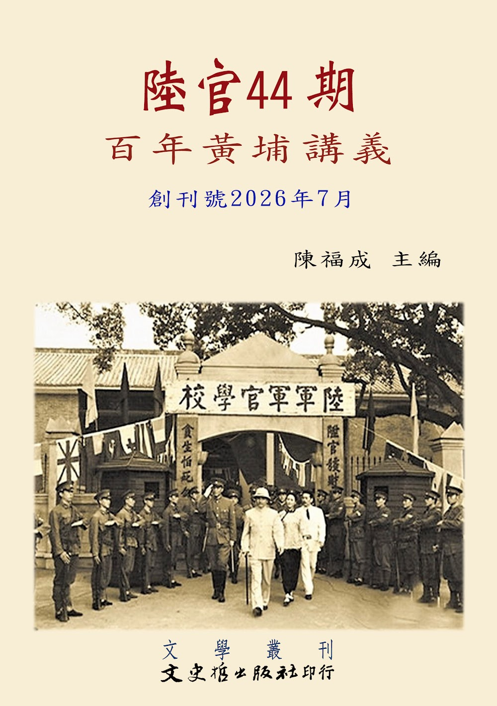
陸官44期:百年黃埔講義 創刊號2026.07
NT$ 340
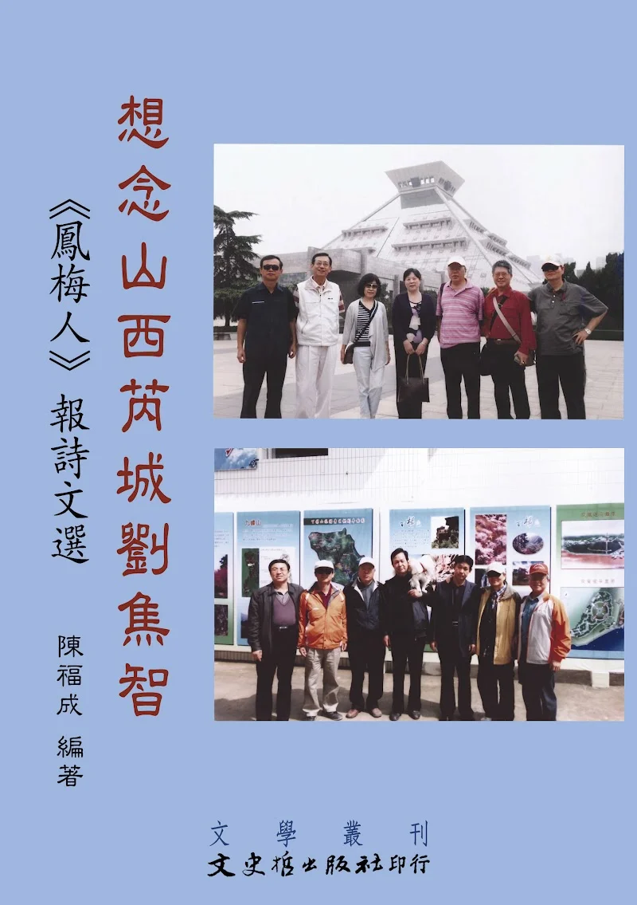
想念山西芮城劉焦智：《鳳梅人》報詩文選
NT$ 400
中國神譜：中國民間宗教信仰之理論與實務
NT$ 680
三黨搞統一：解剖共產黨、國民黨、民進黨怎樣搞統一
NT$ 420
漸凍勇士陳宏傳－他和劉學慧的傳奇故事
NT$ 260

英文單字研究：英文單字終極記憶法
NT$ 200
鄭雅文現代詩之佛法衍譯
NT$ 240
林錫嘉現代詩賞析
NT$ 420

現代田園詩人許其正作品研析
NT$ 520
莫渝現代詩賞析
NT$ 320
陳寧貴現代詩研究
NT$ 380
曾美霞現代詩研析
NT$ 360
劉正偉現代詩賞析
NT$ 400
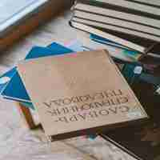
陳福成著作述評: 他的寫作與人生
NT$ 420
舉起文化使命的火把: 彭正雄出版及交流一甲子
NT$ 480
華文現代詩三百家
NT$ 450
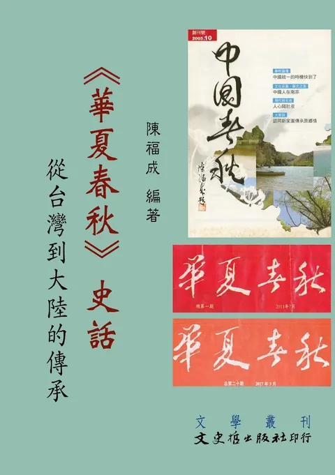
《華夏春秋》史話：從台灣到大陸的傳承
NT$ 460
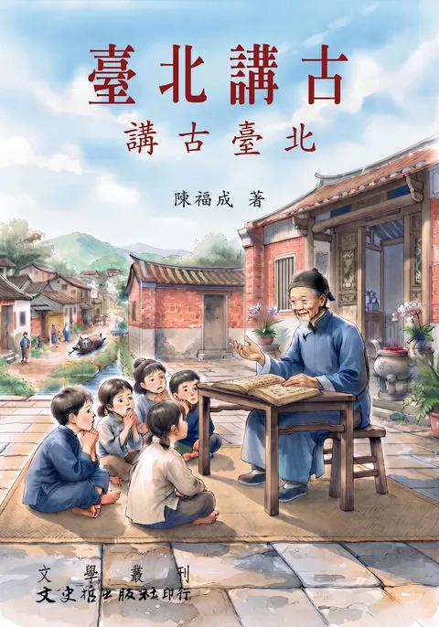
臺北講古：講古臺北
NT$ 220